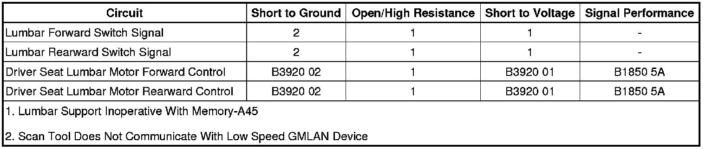

Lumbar Support Inoperative (With Memory - A45)
Lumbar Support Inoperative (With Memory - A45)
Diagnostic Instructions
* Perform the Diagnostic System Check - Vehicle (Initial Inspection and Diagnostic Overview) prior to using this diagnostic procedure.
* Review Strategy Based Diagnosis (Initial Inspection and Diagnostic Overview) for an overview of the diagnostic approach.
* Diagnostic Procedure Instructions (Initial Inspection and Diagnostic Overview) provides an overview of each diagnostic category.
Diagnostic Fault Information

Circuit/System Description
A low current battery voltage is supplied at all times to the memory seat module (MSM) from the 7.5 amp MEMORY RPA fuse located in the left rear fuse block. This voltage is used by the MSM for logic power and to supply battery reference voltage to the seat and lumbar adjuster switches. Battery positive voltage is also supplied at all times to the MSM from the PWR SEATS 30 amp circuit breaker located in the left rear fuse block. This voltage is connected to a power rail internal to the MSM and is used to drive the power seat motors, lumbar motor, adjustable pedal motor, and the seat heater elements on vehicles equipped with heated seats. Each seat and lumbar adjuster motor is controlled by the MSM through 2 motor control circuits. The MSM connects all motor control circuits on the power rail to a common reference point whenever they are not in operation. This reference point is biased to approximately 2.5 volts. The MSM checks to see if the reference voltage is shorted to ground or battery before enabling any of the seat or lumbar motors.
The lumbar horizontal motor is reversible. For example, when the lumbar switch is operated to move the lumbar support forward, battery positive voltage is applied through the switch contacts and the lumbar horizontal forward switch signal circuit to the MSM. In response to this signal, the MSM applies battery voltage through the lumbar motor forward control circuit and ground through the lumbar motor rearward control circuit to the motor. The motor runs to drive the lumbar support forward toward the occupants back until the switch is released. Moving the lumbar support rearward works similarly to moving the lumbar support forward, except that battery positive voltage and ground are applied on the opposite circuits causing the motor to run in the opposite direction.
Reference Information
Schematic Reference
* Driver Seat Schematics (Driver Seat Schematics)
* Passenger Seat Schematics (Passenger Seat Schematics)
Connector End View Reference
Component Connector End Views (Connector Views)
Description and Operation
Power Seats System Description and Operation (Folding Seat) (Power Seats System Description and Operation (Folding Seat))Power Seats System Description and Operation (Front Seat) (Power Seats System Description and Operation (Front Seat))
Electrical Information Reference
* Circuit Testing (Component Tests and General Diagnostics)
* Connector Repairs (Component Tests and General Diagnostics)
* Testing for Intermittent Conditions and Poor Connections (Component Tests and General Diagnostics)
* Wiring Repairs (Component Tests and General Diagnostics)
Scan Tool Reference
Control Module References (Programming and Relearning)
Circuit/System Verification
1. Ignition ON, observe the scan tool lumbar forward switch parameter while operating the lumbar switch to the FORWARD position. The reading should change between ACTIVE and INACTIVE.
• If the reading does not change as the switch is operated, refer to Lumbar Adjuster Switch Malfunction.
2. Ignition ON, observe the scan tool lumbar rearward switch parameter while operating the lumbar switch to the REARWARD position. The reading should change between ACTIVE and INACTIVE.
• If the reading does not change as the switch is operated, refer to Lumbar Adjuster Switch Malfunction.
Circuit/System Testing
Lumbar Adjuster Switch Malfunction
1. Ignition OFF, disconnect the harness connector at the lumbar adjuster switch.
2. Ignition ON, verify that a test lamp illuminates between the B+ circuit terminal D and ground.
• If the test lamp does not illuminate, test the B+ circuit for a short to ground or an open/high resistance. If the circuit tests normal, replace the MSM.
3. Ignition ON, verify the scan tool lumbar forward switch parameter is INACTIVE.
• If not the specified value, test the signal circuit terminal B for a short to voltage. If the circuit tests normal, replace the MSM.
4. Ignition ON, verify the scan tool lumbar rearward switch parameter is INACTIVE.
• If not the specified value, test the signal circuit terminal E for a short to voltage. If the circuit tests normal, replace the MSM.
5. Install a 3A fused jumper wire between the switch signal circuit terminal B and the B+ circuit terminal D. Verify the scan tool lumbar forward switch parameter is ACTIVE.
• If not the specified value, test the signal circuit terminal B for an open/high resistance. If the circuit tests normal, replace the MSM.
6. Install a 3A fused jumper wire between the switch signal circuit terminal E and the B+ circuit terminal D. Verify the scan tool lumbar rearward switch parameter is ACTIVE.
• If not the specified value, test the signal circuit terminal E for an open/high resistance. If the circuit tests normal, replace the MSM.
7. If all circuits test normal, test or replace the lumbar adjuster switch.
Lumbar Motor Malfunction
1. Ignition OFF, disconnect the X3 harness connector at the MSM.
2. Ignition ON, verify that a test lamp illuminates between the B+ circuit terminal 5 and ground.
• If the test lamp does not illuminate, test the B+ circuit for a short to ground or an open/high resistance.
3. Connect the X3 harness connector at the MSM.
4. Disconnect the X1 harness connector at the seat lumbar motor.
5. Connect a test lamp between the motor control circuits terminal A and terminal B.
6. Ignition ON, verify the test lamp illuminates while operating the lumbar adjuster switch to the FORWARD and REARWARD positions.
• If the test lamp does not illuminate, test the motor control circuits for an open/high resistance. If the circuits test normal, replace the MSM.
7. If all circuits test normal, replace the lumbar motor.
Component Testing
1. Ignition OFF, disconnect the harness connector at the lumbar adjuster switch.
2. Test for infinite resistance between the B+ terminal D and each control terminal (B and E) with the switch in the open position.
• If less than the specified value, replace the lumbar adjuster switch.
3. Test for less than 1 ohm of resistance between the B+ terminal D and each control terminal (B and E) with the switch in the closed position.
• If greater than the specified range, replace the lumbar adjuster switch.
Repair Instructions
Perform the Diagnostic Repair Verification (Verification Tests) after completing the diagnostic procedure.
* Lumbar Switch Replacement (Lumbar Switch Replacement)
* Front Seat Lumbar Support Replacement (Front Seat Lumbar Support Replacement)
* Control Module References (Programming and Relearning) for MSM replacement, setup, and programming